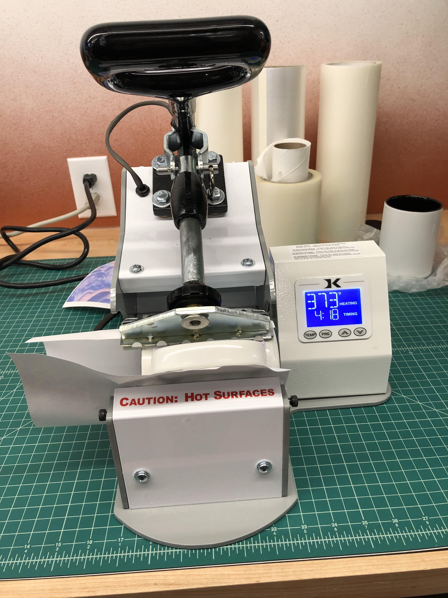
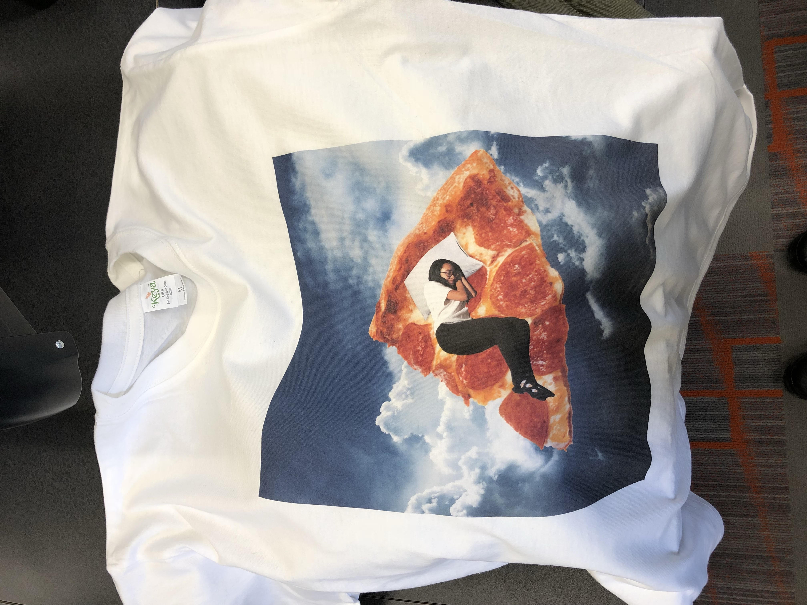

Rotation 3: Design/Garment and Sublimation Printing
Project Description:
I designed an image of me sleeping on top of a slice of pizza for my t shirt design. For this t shirt project, I used the photshop and the GT3PDIP software. I have some experience using photoshop before so the process was not that difficult for me. Once the photshop process was done, I exported to the other software and postioned the image to my liking. I then picked out a white t shirt and had it pressed to remove any creases before transfering it on to the printing machine. I was happy with the end result of this project.


Project Description:
For the sublimation printing project, I picked a mug to transfer my design on. I used the CorelDRAW software to format my design to fit on the mug.